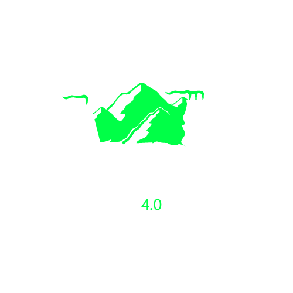

Portal for Service Mesh for Virtualized Environments
However, this architecture presents challenges such as inconsistent user experiences across different server locations.
To solve this problem, a Service Mesh is proposed as a solution!This project's goal is to automate, streamline and mitigate these drawbacks by deploying a Service Mesh across multiple Kubernetes clusters, allowing developers to focus on core tasks.
The project includes a user-friendly portal that allows users to deploy services on their preferred cluster, control all aspects of the architecture, and access real-time management information and settings in an easy way.
Our project simulate a real-world scenario where a main office manages multiples factories in different countries.
Each cluster represents a different country with its factories, these factories communicate with the main office through an API sending live data from each factory, in this case we're simulating each factory recording the material that is coming in and product that is coming out and sending that info to the main office.Our main office will receive that information and display it on the dashboard of our portal. The portal allows to filter each factory info, by logging in into a specific factory account and displaying the live data from that factory, and to add more factory clusters to the main office.
he project includes a user-friendly portal that allows users to deploy services on their preferred cluster, control all aspects of the architecture, and access real-time management information and settings in an easy way.Our milestones
These are our main milestones.
1 - Acquisition of knowledge about virtualization architectures and Kubernetes
2 – Configuration of multiple deployments of Kubernetes
3 – Analysis of existing APIs and consequent survey of requirements for defining an interoperability system;
4 – Preliminar design of the portal and functionalities
5 – Implementation and validation of the portal.

Technologies
These are the technologies that we used.